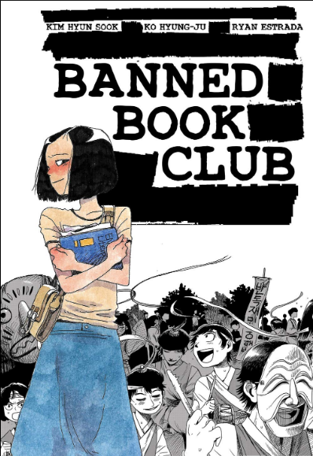

WARNING: This Site Has Stopped Receiving Support! No Further Updates to This Page Will Occur!
Welcome to The Banned Bookclub Project
This website is for the Banned Bookclub unit in British and World
Literature.
Each page will cover all of the assignments that were assigned for the
Banned Bookclub Unit.

How to Navigate This Site!
There are Three Assignments that are included in this site.
each assignment will be listed on this page. Each assignment
will also have a link that leads you to the correct page on this
website. You may also click on the assignments in the top navigation
bar. To return to this page you can click the website logo in the
top left of the screen. Or you can click the return to home button
at the bottom of each page. Have fun! Note: You may also download the assignment in doc form. The button
is at the bottom of the page for each assignment. WARNING: Please View this Page in normal window mode. It does
not shrink well (because I'm not a professional). Also don't view it
on a mobile device.
Divide Banned Book Club into three parts: beginning, middle, and
end. For each part, respond to 3 questions. Each entry
should be at least a paragraph in length (6-8 sentences). 45 points
Guiding Questions for Beginning of Book:
Setting – identify the time and place of Banned Book Club. Discuss
what clues or information was given in the book about the setting.
Name and describe the main character in Banned Book Club. Explain
her physical characteristics as well as her personality. Share your
first impressions of the character and whether you
feel the character is an antagonist or protagonist.
Describe the relationship between two characters in Banned Book
Club. Include their history together and details about their
relationship. Explain the significance of their relationship to
Banned Book Club.
Explain one significant event that occurred in Banned Book Club and
why it is important to the plot of the story.
Explain one significant aspect of the South Korean culture that is
mentioned in the book. Tell how it compares to a specific culture you
are familiar with.
Discuss the writing style of the author. Provide a short paragraph
from the book and evaluate the effectiveness of the author’s style.
Guiding Questions for Middle of Book:
If the time and place have changed since the beginning of the book,
explain how and the significance this has on the story.
What is the general feeling or mood of Banned Book Club? Provide
specific examples of how the author creates that mood.
What are the major conflicts within Banned Book Club? (person vs
person, internal, person vs nature, person vs society, person vs
fate). Describe them in detail and how the contribute to
the plot.
What point of view is Banned Book Club written from? How does this
choice affect the graphic novel? Do you think it is a good choice?
What message or theme are you starting to see develop in the story?
How is the main character helping to reveal this theme?
Pick a quote or passage from the book that you find significant and
discuss why you feel it is important. This can include elements in the
images.
Guiding Questions for End of Book:
What literary techniques does the author use in Banned Book Club
(symbolism, irony, metaphors)? Give examples and evaluate the
effectiveness of them.
What is the theme or themes of Banned Book Club? How does the author
show these ideas? Give evidence and explain how this theme fits in the
time period of the novel and outside of the
story in today’s
more modern world.
What is the climax of Banned Book Club? How do you know it is the
climax? What major events led up to it?
What did you learn from Banned Book Club?
If you could change one thing about the book, what would it be and
why?
Choose one from each category: Character, Setting, Plot
30 points
Character:
Write an interview with one of the major characters for a TV show.
Include a minimum of 10 questions and the answers you feel the
character would give.
Write 5 journal entries from the point of view of one of the
characters. Each entry should be a half of page in length double
spaced.
Create an Instagram account for one of the characters. Then create 5
posts the character would make.
Make a character box. Creatively place 10 objects in a box that you
feel represent the character. On a separate sheet of paper, explain
the significance of each of the objects.
Create a character web that connects all of the characters in the
novel and describe the relationship between them.
Setting:
Sketch a scene in Banned Book Club depicting a major part of the
plot using your own art style (not mimicking the book’s). Explain your
illustration and why you chose to draw this scene.
Draw a color map of where a major part of Banned Book Club takes
place. Make sure you identify everything on the map such as landmarks
and points of interest.
Make a 3D model of a major scene in Banned Book Club.
Plot:
Create a musical score for Banned Book Club. Find at least 5 songs.
Explain where they would fit in the novel and why.
Create several pieces of art that depict the theme of Banned Book
Club and explain how the art represents the theme.
Create a story map of Banned Book Club identifying the 10 most
important events in order. Make sure it includes the major conflict,
climax, and resolution.
Create a graph rating each chapter of Banned Book Club based on
excitement level. Summarize the reasons for your ratings.
Write or create a video/audio file (podcast) where you review
Banned Book Club. The written review should be on page double
spaced. A video/ audio review should be 3-4 mintues.
Your review should include the following.
Discuss the authors’ style, including use of vocabulary, sentence
structure, dialect, and literary devices, and images
Discuss the development of characters in Banned Book Club. Were they
realistic? What, if anything, were they lacking? Keep in mind this is
based on real events/people.
Discuss the theme of Banned Book Club. Did the authors accomplish
what they wanted with the theme? Why or why not?
Provide your overall impression of Banned Book Club and whether or
not you would recommend it to others. Use a rating scale of 1-10 and
explain your rating.